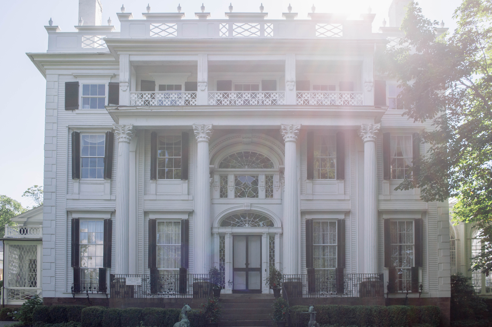

January 4, 2019
by Benjamin Boczulak
Here is a photo from my archives. It was taken on a summer morning in 2018 outside of Linden Place. Linden Place is a historic mansion in Bristol, Rhode Island. The mansion was constructed in 1810 by General George DeWolf who was made the vast majority of his wealth through illegal slave trade. Exterior shots of the home were used in the 1974 film adaptation of The Great Gatsby, which was filmed in nearby Newport.
Location from Google Maps: